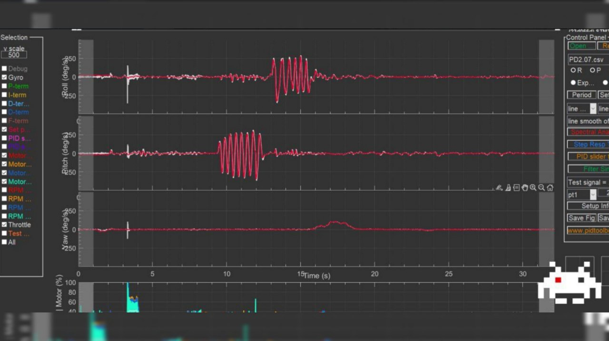

Betaflight Blackbox Explorer
Программа для открытия файлов "черного ящика", полученных из полетного контролера.
- установка на Windows.
📝
Это вложение из поста t.me/platforma_fpv/35/1100

PIDToolBox.exe, версия PRO
ℹ️ Инструмент для работы с журналами "черного ящика" fpv-дрона, позволяет сравнивать несколько журналов в одном окне, чтобы мгновенно видеть результаты внесенных изменений.
Скачать PIDtoolbox Pro v0.71 для устройств:
Любая версия при установке потянет за собой матлаб ~ 1Gb
📝 Основные отличия PIDtoolbox Pro от обычной версии -
1. Есть симулятор фильтров.
2. Просмотр измененных фильтров на уже существующем логе, чтоб каждый раз не заливать в птицу и не записывать новый лог.
3. Просмотр спектрограмм шумов по каждому мотору отдельно.
➡️
Добавлено в версии 0.71
- изменен интерфейс;
- добавлено автоопределение типа логов;
- работа с файлами bf 4.5.0 с различными режимами отладки.
#программное_обеспечение
#для_windows
#для_linux
#для_macos
#черный_ящик
#настройка_бпла
#техник_бпла
Это вложение из поста t.me/platforma_fpv/16/1010
BlackBox_tools
Набор инструментов для разделения файла черного ящика на составные:
- трек полета, работа авионики и многое другое.
Установка на Windows (скачать всю папку).
📝
Это вложение из поста t.me/platforma_fpv/35/1101
Google Earth
Программа для просмотра траектории полета.
В нее загружается файл, полученный из
- установка на Windows.
📝
Это вложение из поста t.me/platforma_fpv/35/1102
Настройка PIDов и фильтров с помощью
Blackbox (Черный ящик).
Переведено с украинского.
#ЛИТЕРАТУРА
#техник_бпла
#черный_ящик
Это вложение из поста t.me/platforma_fpv/231/1103
Программы для анализа черного ящика (BlackBox).
Betaflight Black Box Viewer
Базовая программа для анализа логов БПЛА на прошивке Betaflight. Имеется возможность полноценной настройки рабочего пространства под разные задачи. В большинстве случаев используется для подбора параметров летательных аппаратов и решения проблем, возникающих в процессе полета.
📎
PID Tool Box
Профильная программа необходимая для подбора настроек из «раздела PID тюнинг» на основе сравнения показателей с нескольких логов.
📎
Black Box Tools
Программа дающая возможность «разбить» полученный в полете лог на ряд файлов и таблиц. Чаще всего необходим для получения GPS файла содержащего профиль полета.
📎
Google Earth
Программа способная интерпретировать GPS файлы и визуализировать их. Основные данные, которые могут быть полезны: траектория, скорость, высота, продолжительность, начальные/конечные точки.
📎
⚠️ Все программы устанавливаются на Windows.
📝
в 2х частях - "Углубленная настройка полетного контроллера. Фильтрация гироскопа, PID-тюнинг":
#программное_обеспечение
#для_windows
#настройка_бпла
#черный_ящик
#техник_бпла
Веб-страница создана автоматически на основе поста пользователя ПЛАТФОРМА_FPV